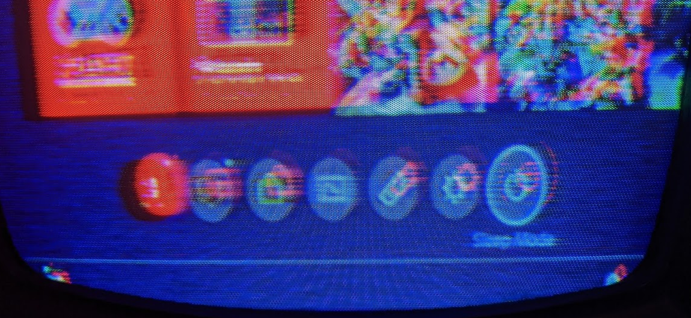
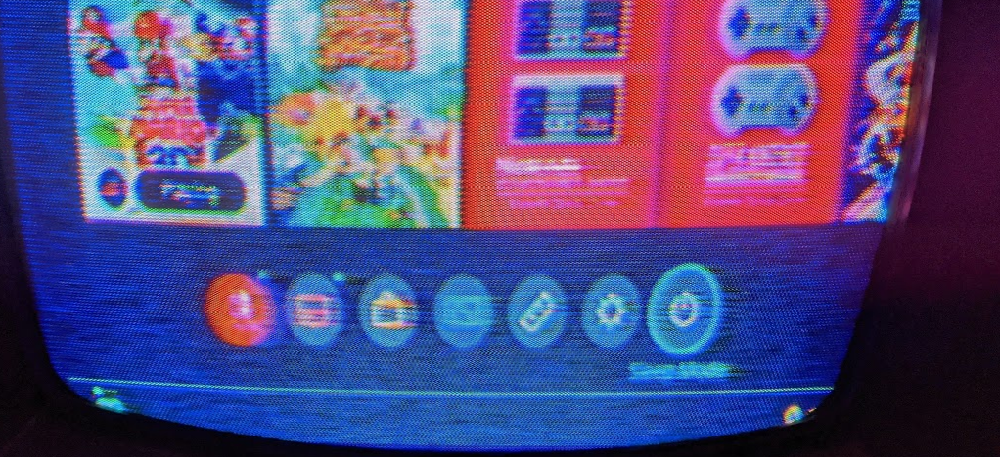
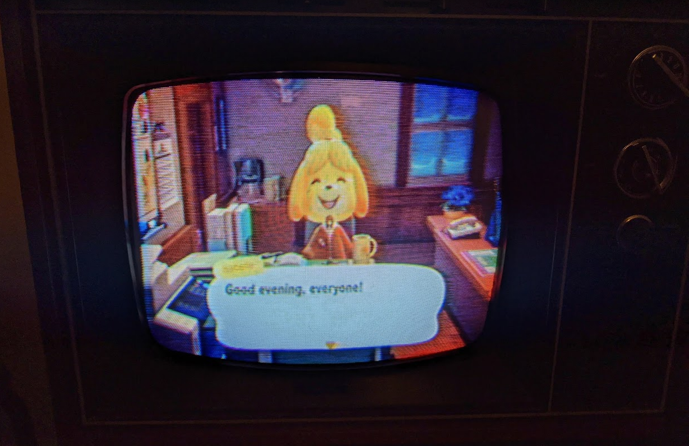
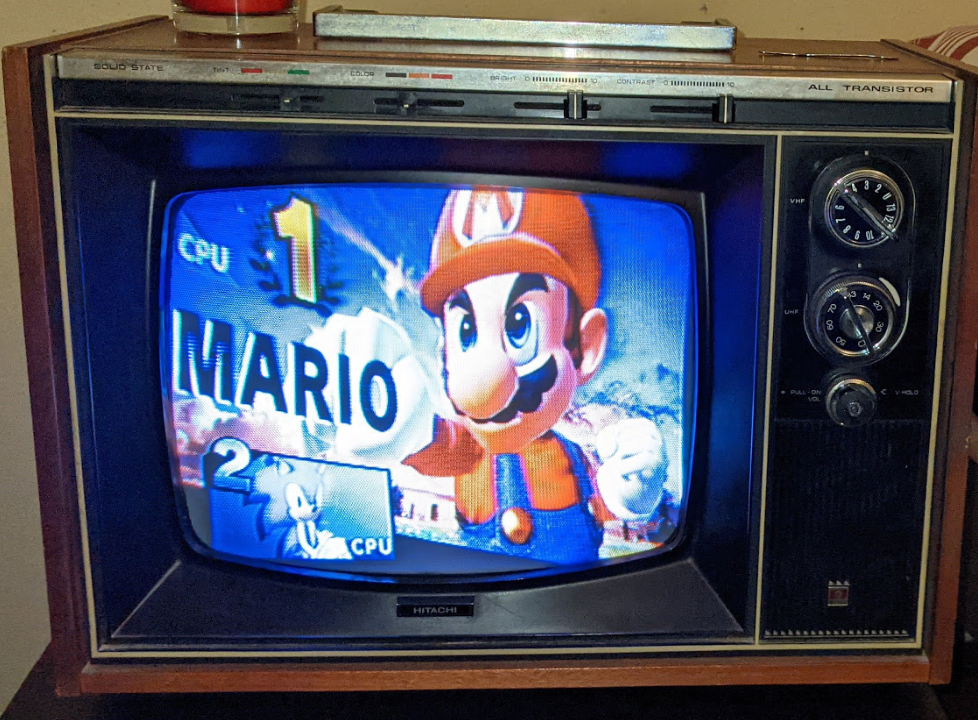
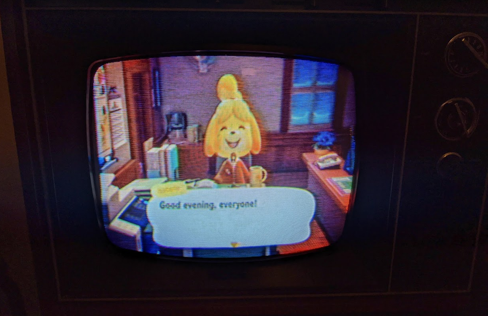
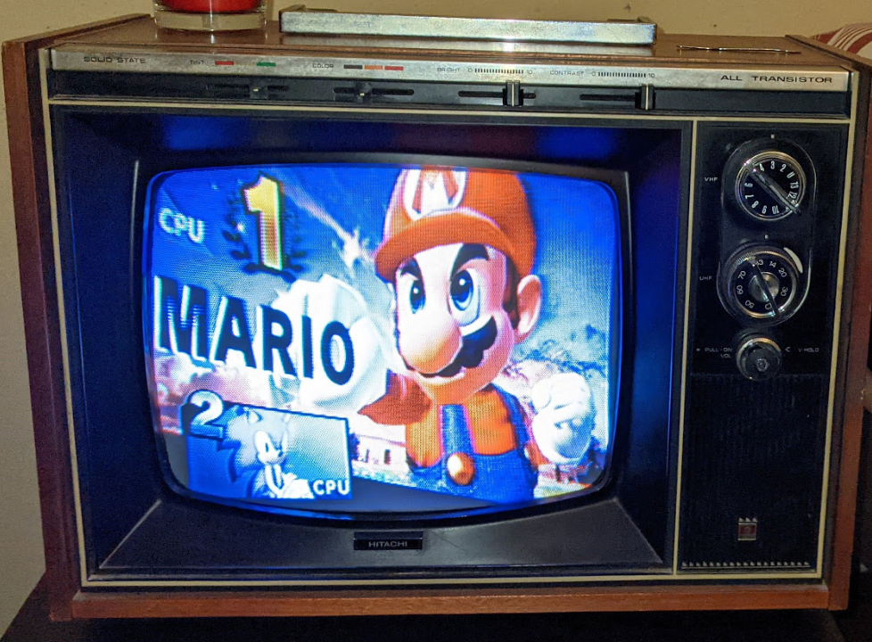

Nintendo Switch on 50 Year Old CRT
I found a CRT at a thrift shop and I fell in love with it's design. I love furniture made of wood and this was no exception. We used to have a room in my childhood home that had an old furnace, and everything was wood and brick. So cozy. If I'm ever to have a room like that again, this would be a fine addition. But I want it to be usable of course, so here's my journey at fixing up a TV that's around 50 years old and 100% incompatable with ANY kind of modern media
Demo Vid:Color Alignment
 
Left is before color alignment, and right is after
All the colors were terribly aligned. I had to tear everything apart to get this far though. On this CRT, the only color adjustments you make were in the quantinty of color(i.e. a hole labled Red Scr. on the back which turns down ALL red). To adjust the actual alignment I had to take the TV apart. After...
- Taking off 10 screws
- Breaking off a metal piece keeping the power cord in permanently
- Carefully not breaking off the antenna
... I was able to get into the back of the TV

These were the last of the knobs that I tried, they were really well hidden, two aren't visible in the pic but the green arrows point to their aprox location.
Despite the dozen or so easily visible knobs, the most important were the least visible with no indication of their purpose. After this thought the image quality was almost perfect
Vertical/Horizontal Hold
When I first got this TV working, both these settings were way off, it was a trial and error of spinning knobs till I got I even knew what the issue was, since nothing on the screen is sensible when these setting are wrong
Vertical Hold was one of the most important settings I had to fix. Vertical hold when set wrong makes the image on the screen spin like a water wheel, falling down over and over.Pictures
 


